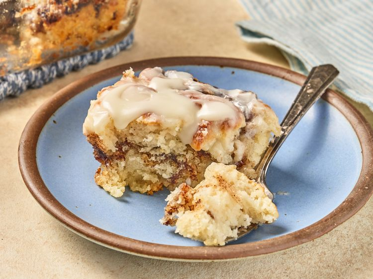

These cinnamon roll butter swim biscuits are the best of both worlds.
A cinnamon swirl layer in the center of buttery biscuit dough makes them great for breakfast or with mid-morning coffee.
Preheat the oven to 425 degrees F (190 degrees C). Stir brown sugar, cinnamon, and 2 tablespoons heavy cream together in a small bowl until smooth and set aside.
Place butter in an 8x8-inch baking dish and microwave on high until melted.
Whisk flour, sugar, baking powder, and salt together in a bowl. Add 1 cup heavy cream and buttermilk and stir until just blended.
Pour half the batter into the buttered dish, then spoon brown sugar mixture randomly over the top, and use a paring knife to slightly swirl or spread the mixture. Top with remaining batter.